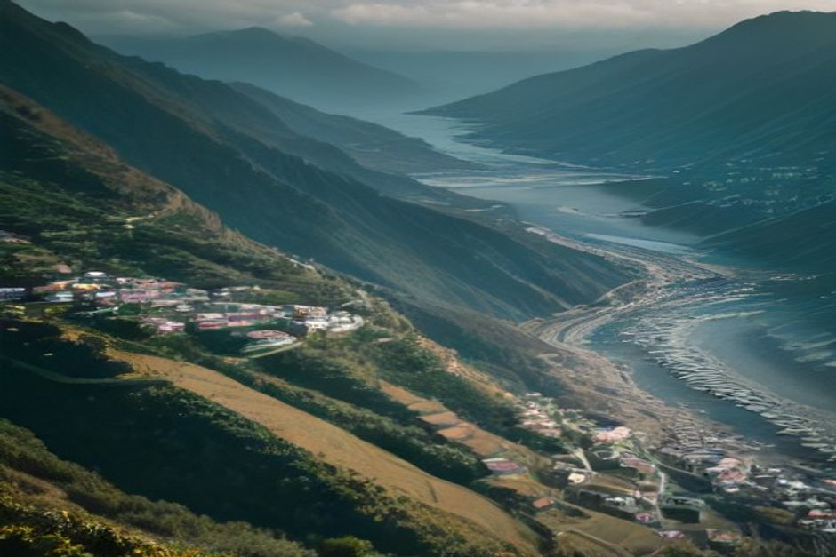
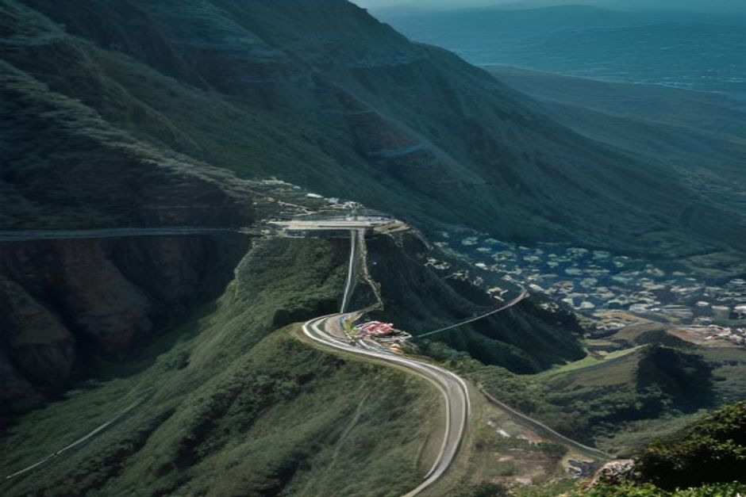

La mayoría de los visitantes ve la costa norte de Madeira desde la ventanilla del coche, de camino a Porto Moniz. Rocha do Navio es el motivo para parar: un teleférico que baja desde un acantilado de Santana directo hasta el mar, hacia una de las pocas reservas naturales marinas de la isla.
¿Qué es Rocha do Navio?
Rocha do Navio es un pequeño teleférico y una reserva natural en la costa norte de Madeira, en el municipio de Santana, que conecta lo alto del acantilado con una fajã —una terraza costera llana a nivel del mar— donde antaño los agricultores cultivaban parcelas aisladas. El nombre significa «roca del barco», en referencia a un buque holandés que naufragó allí en el siglo XIX. La reserva se creó en 1997 para proteger el fondo marino y dos pequeños islotes cercanos a la costa, Rocha das Vinhas y Viúva, lo que la convierte en una de las pocas áreas protegidas puramente marinas de Madeira.

¿Cómo se baja hasta Rocha do Navio?
En teleférico, en unos cinco minutos. El teleférico de Rocha do Navio baja desde una estación cercana a Santana hasta la fajã, y suele funcionar de 9:00 a 13:00 y de 14:00 a 17:00 entre semana, con horarios algo más amplios los fines de semana; conviene confirmarlo in situ el mismo día, ya que los pequeños teleféricos locales de Madeira sí cierran por mal tiempo o mantenimiento. El billete de ida y vuelta es económico, normalmente entre 5 € y 8 €, y el propio trayecto forma parte del atractivo: un descenso lento y abierto sobre terrenos de cultivo en el acantilado, con el Atlántico llenando la vista durante todo el camino.
¿Se puede bajar caminando en lugar de coger el teleférico?
Sí. Un sendero de aproximadamente 1,5 km, con un desnivel de unos 330 metros, va desde las cercanías de la estación superior del teleférico hasta la fajã, así que se puede caminar en una dirección y subir en teleférico en la otra. Bajar a pie y subir en teleférico es la combinación más cómoda, ya que subir 330 metros por un sendero costero empinado al final de la visita es bastante más duro que hacerlo al principio.
¿Hay playa o piscina en Rocha do Navio?
Playa de arena, no. La orilla, al pie del acantilado, es una bahía de guijarros volcánicos, donde los escarpines marcan una diferencia notable sobre las piedras. No es un complejo de piscinas naturales como Porto Moniz o Seixal, más adelante en la costa norte, y el oleaje abierto del Atlántico hace que las condiciones para meterse en el agua o nadar cambien mucho de un día a otro. La mayoría viene por el paseo, las vistas y el entorno, más que para bañarse.
¿Por qué merece la pena proteger esta reserva natural?
La reserva marina de Rocha do Navio abarca el fondo marino hasta unos 100 metros de profundidad alrededor de la fajã y sus dos islotes, ofreciendo a las poblaciones de peces e invertebrados un tramo de costa protegido de la presión pesquera; la misma lógica que hay detrás de la reserva de Garajau, más al sur, solo que en el lado más salvaje y expuesto de la isla. Por encima del nivel del mar, los antiguos bancales de cultivo y la vegetación del acantilado transmiten lo aisladas que estaban estas fajãs de la costa norte antes de que llegaran los teleféricos y las carreteras.
¿Cómo se compara con el resto de la costa norte de Madeira?
Es más tranquilo y específico que los grandes atractivos de la costa norte. Porto Moniz tiene sus piscinas naturales de origen volcánico, Seixal cuenta con una auténtica piscina natural y una cala de arena negra, y São Vicente tiene sus cuevas; el atractivo de Rocha do Navio es el propio descenso y la sensación de llegar a un tramo de costa al que antes solo se podía acceder a pie. Es un complemento fácil para un día en Santana que ya incluya las casas de paja o el Parque Forestal das Queimadas, más que un destino independiente que justifique un largo trayecto en coche por sí solo.
¿Merece la pena combinarlo con un paseo en barco?
No el mismo día, y desde luego no en el mismo barco. Rocha do Navio está en la costa norte de Madeira, expuesta al Atlántico, mientras que un paseo privado en barco con Chifbay navega por la costa sur, resguardada, entre Câmara de Lobos y Ponta do Sol, donde el agua se mantiene lo bastante tranquila para nadar y acercarse a los acantilados durante todo el año. Los dos lados de la isla no se conectan por mar en una sola excursión, pero combinan bien en un viaje más largo: una costa norte salvaje y rural un día, y aguas tranquilas, acantilados y paradas para nadar al siguiente.
Buena parte de la costa norte de Madeira es un paisaje que se ve al pasar en coche. Rocha do Navio es un paisaje al que hay que bajar.
Si ya estás recorriendo la costa norte camino de Porto Moniz, el desvío hasta Santana para ver Rocha do Navio cuesta menos de una hora y te muestra una cara de la isla que la mayoría de los itinerarios se saltan por completo.
